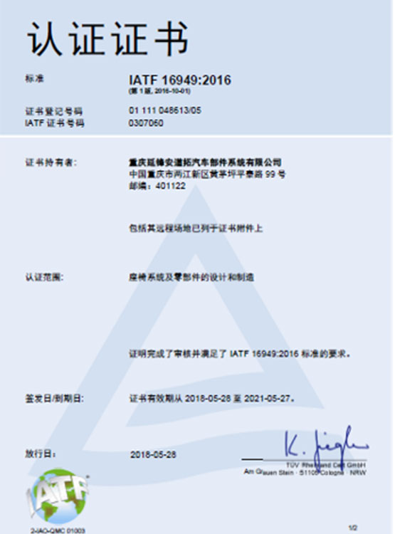
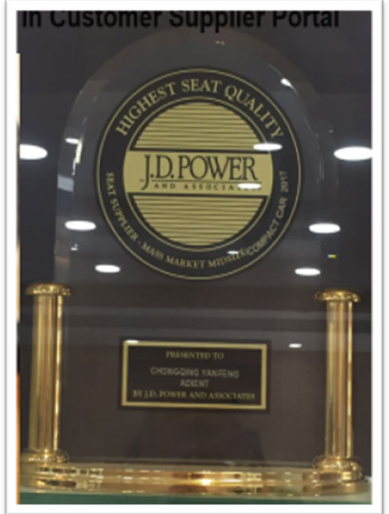
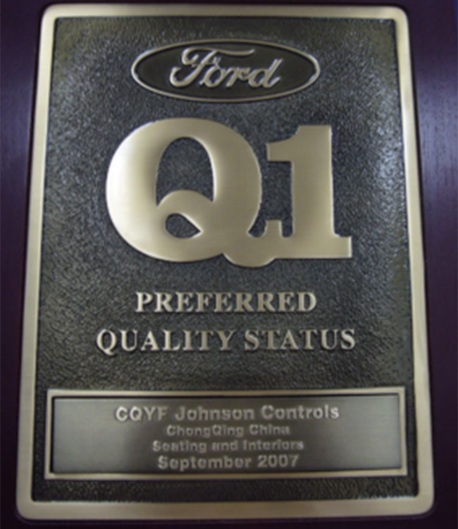
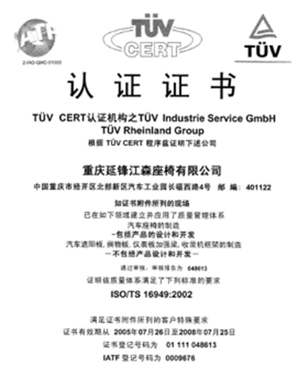
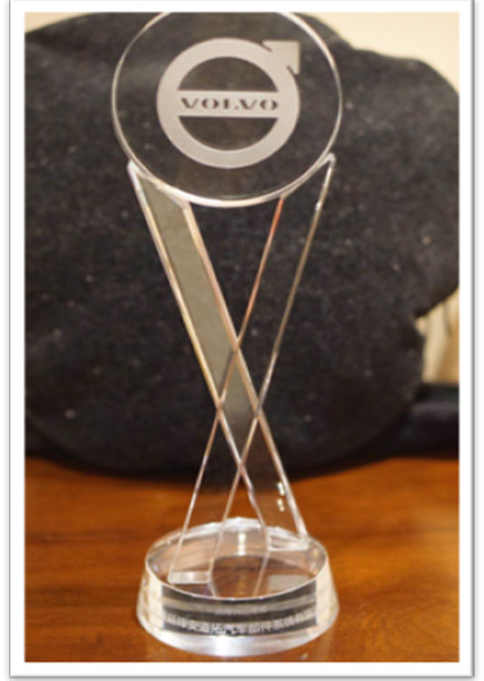
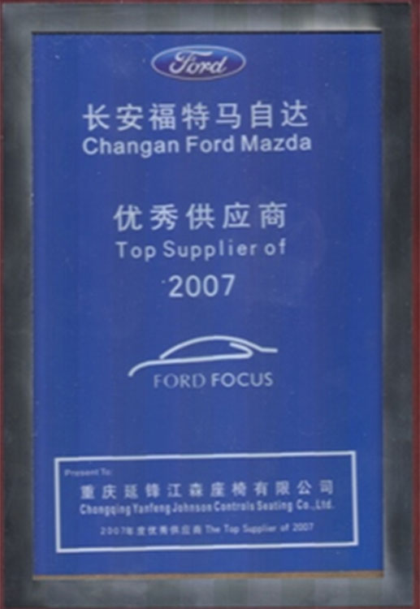
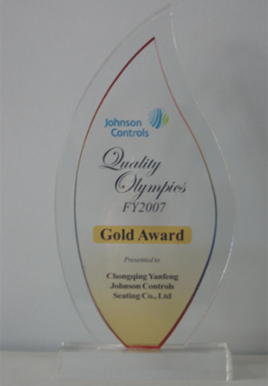

正在加载请稍后


质量部

2003年9月，重庆延锋安道拓质量部随着重庆延锋江森汽车座椅有限公司的成立而同期成立，一直陪伴公司走过了15个年头，在这风雨同舟的15载里，我们一直以“Never Give Up 永不言弃”的精神激励着所有质量人。在四届部门领导人的带领下，质量部也发生了翻天覆地的变化，质量部的员工从2003年的20人到2018年的59人，工程师数量从2003年15人到2018年的47人，也培养出了4位高级工程师和10位资深工程师，可谓是“人才辈出，各领风骚”。他们为福特C307、C346、C490，沃尔沃Y483、L541、K426，长安S201、C301，长安铃木YN5、YY5、东风小康F506、F507，力帆LF820、蔚来ES8等项目的量产付出了很多的努力和心血，也得到了公司上下的认可与表扬。
15年，弹指一挥间，质量部一直在不断变化和突破。2010年，正式成立先期质量管理团队，这意味着，质量部由之前单纯的过程质量细化为先期质量、过程质量、供应商质量、体系、实验室，更加明确细致的分工，为质量部后续的发展奠定了夯实的基础；同时，2012年，为积极响应公司的发展，质量部将过程质量划分给各个工厂，由工厂负责管理，使过程产品质量管理更高效，更好，更快的为客户服务，为公司后续的发展迈出了重要的一步。此外，质量管理体系也在不断的改善和夯实。
回望过去，我们有激情燃烧的瞬间，也有感动内心的时刻。有自我成长的收获，也有被客户认可的喜悦。这些荣誉告诉我们只要有付出就一定会有回报，客户的认可也激励着我们不断向前。我们会继续带着“永不言弃”的质量精神去迎接未来，迎接更加艰巨的挑战。
质量部
质量部
质量部
-

IATF16949证书
-

J.D.Power奖
-

福特Q1证书
-

江铃汽车优秀供应商奖
-

首张ISOTS16949证书
-

沃尔沃优秀供应商奖
-

长安福特马自达优秀供应商
-

中国区质量奥林匹克金奖